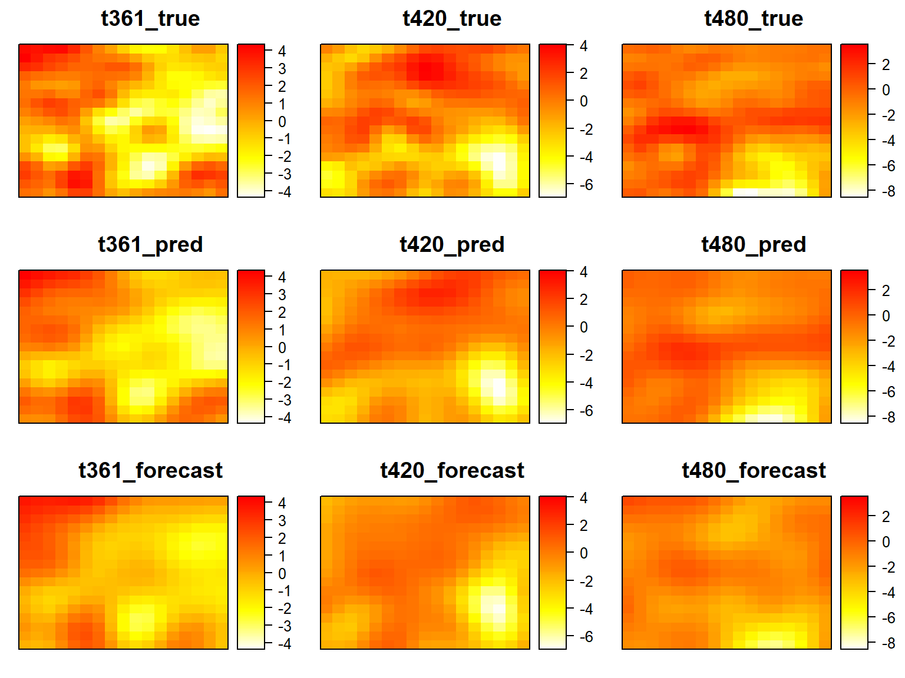
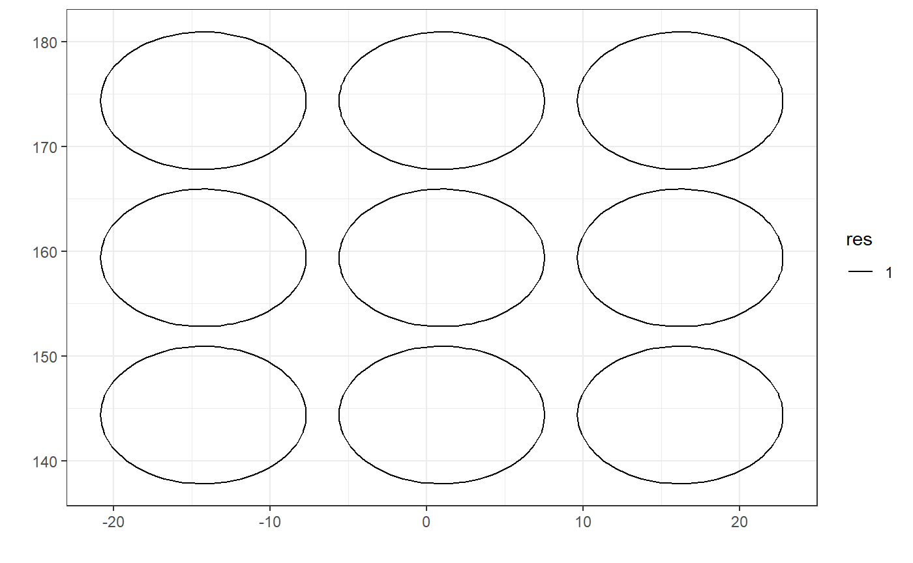

vignettes/real_data_example.Rmd
real_data_example.Rmdlibrary(temp.spat.pca3)
library(dplyr)
#>
#> Attaching package: 'dplyr'
#> The following objects are masked from 'package:stats':
#>
#> filter, lag
#> The following objects are masked from 'package:base':
#>
#> intersect, setdiff, setequal, union
library(tidyr)
dim(NCEP_U)
#> [1] 480 289
dim(NCEPlatlon)
#> [1] 289 2s = expand.grid(unique(s_new[,1])[seq(1,17,by=2)],
unique(s_new[,2])[seq(1,17,by=2)])
colnames(s)=c("lon","lat")
s = data.frame(s)
s_id = dplyr::left_join(s, s_new_id, by=c("lon", "lat"))
train_index = s_id$id
# transform format
s_new = as.matrix(s_new)
s = as.matrix(s)
y_mat = y_mat_all_c[1:360,train_index]
y_mat_new = y_mat_all_c[361:480,train_index]#location table
location = data.frame(s_new)
colnames(location)=c("lat","lon")
location$set = rep("test", nrow(s_new))
location$set[train_index] = "train"
location$id = 1:nrow(location)
y_test = y_mat_all_c[361:480,]
test_idx = which(location$set=="test")
#long-format space-time table
library(magrittr)
#>
#> Attaching package: 'magrittr'
#> The following object is masked from 'package:tidyr':
#>
#> extract
space_wide = data.frame(y_mat_all_c)
space_wide$time = 1:nrow(space_wide)
data_long = space_wide %>%
tidyr::gather(id, z, -time) %>%
dplyr::mutate(id= sub("V","",id)) %>%
dplyr::mutate(training_set=(time %in% c(1:360) & id %in% train_index)) %>%
dplyr::mutate(id = as.numeric(id)) %>%
dplyr::left_join(s_new_id, by="id")tau_cv = 2^seq(1,20,by=1)
k = 1:40cv_data = temp_spat_cv_final3(s=s, y_mat=y_mat,
sigma2_eps = 1,
itermax = 30,
tol=0.001,
tau=tau_cv, k=k)
cv_data$best_list$k # = 39
cv_data$best_list$stau # = 32768temp_spat_result = temp_spat_data_em3(s = s,
s_new = s_new,
y_mat = y_mat,
y_mat_new = y_mat_new,
k = 39,
tau = 32768,
sigma2_eps=1,
itermax = 30,
tol = 10^(-3))t_set = c(361, 420, 480)
library(lattice)
library(gridExtra)
#> Warning: package 'gridExtra' was built under R version 3.5.3
#>
#> Attaching package: 'gridExtra'
#> The following object is masked from 'package:dplyr':
#>
#> combine
plist=list()
for(i in 1:3){
t = t_set[i]
y_comp = data.frame(observe = y_mat_all_c[t,],
pred = temp_spat_result$pred_result$y_spat[t-360,],
forecast = temp_spat_result$pred_result$y_temp[t-360,],
lat=s_new[,1],
lon=s_new[,2])
plist[[1+(i-1)]] = levelplot(observe~lon*lat,
data=y_comp,
scales = list(draw = FALSE), xlab = NULL, ylab = NULL,
at=seq(min(y_comp[,1:3]), max(y_comp[,1:3]), length.out=100),
col.regions = heat.colors(100)[length(heat.colors(100)):1],
main=paste0("t",t,"_true"))
plist[[4+(i-1)]] = levelplot(pred~lon*lat,
data=y_comp,
scales = list(draw = FALSE), xlab = NULL, ylab = NULL,
at=seq(min(y_comp[,1:3]), max(y_comp[,1:3]), length.out=100),
col.regions = heat.colors(100)[length(heat.colors(100)):1],
main=paste0("t",t,"_pred"))
plist[[7+(i-1)]] = levelplot(forecast~lon*lat,
data=y_comp,
scales = list(draw = FALSE), xlab = NULL, ylab = NULL,
at=seq(min(y_comp[,1:3]), max(y_comp[,1:3]), length.out=100),
col.regions = heat.colors(100)[length(heat.colors(100)):1],
main=paste0("t",t,"_forecast"))
}
grid.arrange(grobs=plist, ncol=3)
y_observe = y_mat_all_c[361:480,]
mean(y_observe <= temp_spat_result$pred_result$y_spat_up &
y_observe >= temp_spat_result$pred_result$y_spat_lw)
#> [1] 0.9818916mean(y_observe <= temp_spat_result$pred_result$y_temp_up &
y_observe >= temp_spat_result$pred_result$y_temp_lw)
#> [1] 0.9317474sum((temp_spat_result$pred_result$y_spat[,test_idx]-y_mat_all_c[361:480,test_idx])^2)/(120*289)
#> [1] 0.4355011sum((temp_spat_result$pred_result$y_temp[,test_idx]-y_mat_all_c[361:480,test_idx])^2)/(120*289)
#> [1] 1.437194library(FRK)
#> Warning: package 'FRK' was built under R version 3.5.3
library(sp)
#> Warning: package 'sp' was built under R version 3.5.2
G1 = auto_basis(data=s_new %>% SpatialPoints(),
nres=1,type="Gaussian")
show_basis(G1)
#> Note: show_basis assumes spherical distance functions when plotting
model2 = temp_spat_data_em_model2(s=s, s_new=s_new,
y_mat=y_mat, y_mat_new=y_mat_new,
bas_mat=phi_res1, bas_mat_new =phi_res1_new ,
k=ncol(phi_res1),
sigma2_eps=1, itermax = 30, tol = 0.001)sum((model2$pred_result$y_spat[,test_idx]-y_mat_all_c[361:480,test_idx])^2)/(120*289)
#> [1] 1.683602sum((model2$pred_result$y_temp[,test_idx]-y_mat_all_c[361:480,test_idx])^2)/(120*289)
#> [1] 2.084958